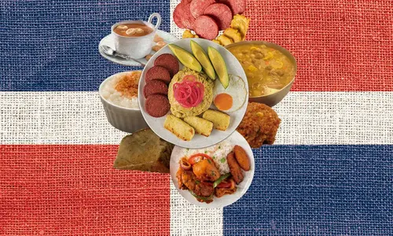
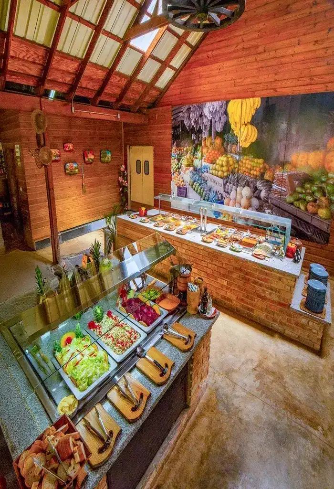

Welcome to Dominican Gastronomy
Explore the roots, flavors, and identity of Dominican cuisine.
Our Roots
Taíno Influence
Indigenous traditions shaping Dominican cuisine. Cassava, corn, and tropical fruits were staples of the Taíno diet, forming the foundation of many Dominican dishes today.
African Influence
Flavors and techniques brought from Africa. Plantains, okra, and rich stews reflect African culinary heritage, blending with local ingredients to create unique flavors.
Spanish Influence
Colonial heritage blending with local foods. Rice, wheat, and meats introduced by the Spanish merged with native crops, shaping the national dish known as "La Bandera."
Iconic Dominican Dishes
Food as Identity

Food is more than sustenance; it is identity, culture, and tradition. Dominican gastronomy reflects the soul of its people. From family meals to national celebrations, dishes embody history, resilience, and creativity. Sharing food is a way of strengthening bonds, preserving heritage, and expressing pride in Dominican culture. Beyond taste, Dominican cuisine is a living archive of influences and stories. Each recipe carries traces of indigenous roots, African flavors, and Spanish heritage, blending into a unique culinary language. To cook and share these dishes is to honor ancestors, celebrate diversity, and pass on traditions to future generations.